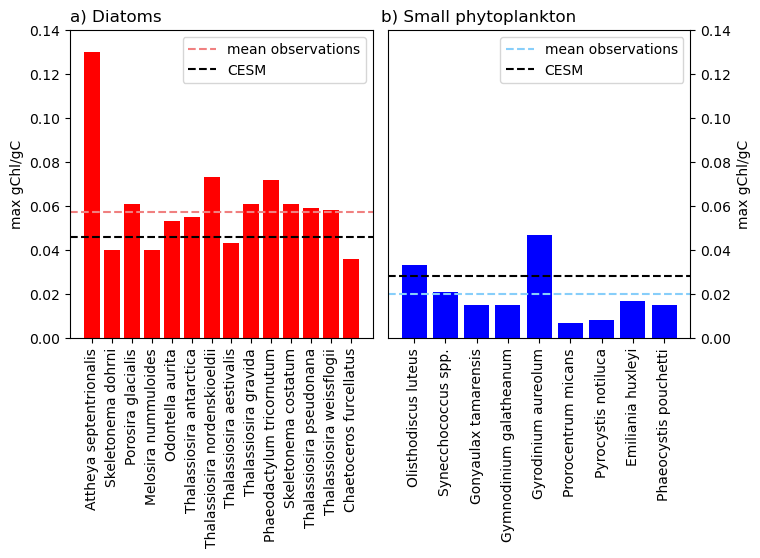

%matplotlib inline
import warnings
warnings.filterwarnings('ignore')
import os
from glob import glob
from collections import OrderedDict
import xarray as xr
import numpy as np
import esmlab
import matplotlib.pyplot as plt
import cartopy
import cartopy.crs as ccrs
from scipy import stats
import pop_tools
from statistics import mean
from matplotlib import style
from scipy import stats
import pandas as pd
style.use('default')
import matplotlib.path as mpath
from IPython.display import Image
coldwater species = above 40° latitude
df = pd.read_csv('/glade/work/kristenk/nb_for_jupyterbook/data/Chl_C_ratios.csv')
df
| PFT_group | study | species | isolate_location | gChl/gC | notes | |
|---|---|---|---|---|---|---|
| 0 | diat | Lomas_etal_2019 | Attheya septentrionalis | Baffin Bay (77.8N, 76.4W), N. Atlantic Ocean | 0.130 | NaN |
| 1 | diat | Lomas_etal_2019 | Skeletonema dohrni | Kasitsna Bay (59.5N, 151.4W), Alaska | 0.040 | NaN |
| 2 | diat | Lomas_etal_2019 | Porosira glacialis | Narragansett Bay (41.6N, 71.4W), Rhode Island | 0.061 | NaN |
| 3 | diat | Lomas_etal_2019 | Melosira nummuloides | Harwich Harbor (41.7N, 70W), Massachusetts | 0.040 | NaN |
| 4 | diat | Lomas_etal_2019 | Odontella aurita | Webb Cove 44.2N, 69.5W), Stonington, Maine | 0.053 | NaN |
| 5 | diat | Lomas_etal_2019 | Thalassiosira antarctica | Oslo Fjord (59.5N, −10.6W), Norway | 0.055 | NaN |
| 6 | diat | Lomas_etal_2019 | Thalassiosira nordenskioeldii | Tromsø (69.7N, −18.7W), Norway | 0.073 | NaN |
| 7 | diat | Lomas_etal_2019 | Thalassiosira aestivalis | North Atlantic Ocean (42.7N, 69.6W) | 0.043 | NaN |
| 8 | diat | Lomas_etal_2019 | Thalassiosira gravida | Tromsø (59.5N, −10.6W), Norway | 0.061 | NaN |
| 9 | diat | Geider_etal_1997,Geider_etal_1985 | Phaeodactylum tricornutum | unknown; worldwide distribution | 0.072 | NaN |
| 10 | diat | Geider_etal_1997,Terry_etal_1983 | Phaeodactylum tricornutum | unknown; worldwide distribution | 0.067 | NaN |
| 11 | diat | Geider_etal_1997,Cosper_1982 | Skeletonema costatum | unknown; temperate waters | 0.036 | NaN |
| 12 | diat | Geider_etal_1997,Cosper_1982 | Skeletonema costatum | unknown; temperate waters | 0.036 | NaN |
| 13 | diat | Geider_etal_1997,Landgon_1988 | Skeletonema costatum | unknown; temperate waters | 0.061 | NaN |
| 14 | diat | Geider_etal_1997,Yoder_1979 | Skeletonema costatum | Narragansett Bay (41.6N, 71.4W), Rhode Island | 0.047 | NaN |
| 15 | diat | Geider_etal_1997,Geider_1984 | Thalassiosira pseudonana | unknown | 0.059 | NaN |
| 16 | diat | Geider_etal_1997,Falkowski_etal_1985 | Thalassiosira weissflogii | Long Island Sound | 0.055 | NaN |
| 17 | diat | Geider_etal_1997,Laws_Bannister_1980 | Thalassiosira weissflogii | unknown | 0.058 | NaN |
| 18 | sp | Geider_etal_1997,Langdon_1988 | Olisthodiscus luteus | unknown | 0.033 | NaN |
| 19 | sp | Geider_etal_1997,Kana_Gilbert_1987 | Synecchococcus spp. | unknown | 0.021 | NaN |
| 20 | sp | Geider_etal_1997,Langdon_1988 | Gonyaulax tamarensis | unknown | 0.015 | NaN |
| 21 | sp | Geider_etal_1997,Nielson_1996 | Gymnodinium galatheanum | Olsofjord, Norway | 0.015 | NaN |
| 22 | sp | Geider_etal_1997,Nielson_1992 | Gyrodinium aureolum | unknown | 0.047 | NaN |
| 23 | sp | Geider_etal_1997,Falkowski_etal_1985 | Prorocentrum micans | unknown; temperate to tropical | 0.007 | NaN |
| 24 | sp | Geider_etal_1997,Rivkin_etal_1982 | Pyrocystis notiluca | Sargasso Sea | 0.008 | NaN |
| 25 | sp | Geider_etal_1997,Muggali_Harrison_1997 | Emiliania huxleyi | Subarctic North Pacific, Station P | 0.017 | NaN |
| 26 | sp | Verity_etal_1991 | Phaeocystis pouchetti | Tromso, Norway | 0.015 | largest value reported among solitary & colonies |
| 27 | diat | Sakshaug_etal_1991 | Thalassiosira nordenskioeldii | Barents Sea | 0.062 | low light adapted, 12 h |
| 28 | diat | Sakshaug_etal_1991 | Chaetoceros furcellatus | Barents Sea | 0.036 | low light adapted, 12 h |
CESM diat gChl/gC:¶
diat: 0.046¶
sp: 0.028¶
selection_diat = df[(df['PFT_group'] =='diat')]
selection_diat['gChl/gC'].mean()
0.05725000000000001
selection_sp = df[(df['PFT_group'] =='sp')]
selection_sp['gChl/gC'].mean()
0.019777777777777783
make a bar plot¶
species_diat = np.asarray(selection_diat.species)
species_sp = np.asarray(selection_sp.species)
#species_diat
ratio_diat = np.asarray(selection_diat['gChl/gC'])
ratio_sp = np.asarray(selection_sp['gChl/gC'])
#ratio_diat
fig = plt.figure(figsize=(8,4))
ax = fig.add_subplot(1,2,1)
ax.set_ylim(0,0.14)
ax.set_title('a) Diatoms', x=0.15)
ax.bar(species_diat,ratio_diat, color='red')
ax.set_ylabel('max gChl/gC')
ax.tick_params(axis='x', labelrotation = 90)
plt.axhline(y=selection_diat['gChl/gC'].mean(), color='lightcoral', linestyle='--',label='mean observations')
plt.axhline(y=0.046, color='black', linestyle='--', label='CESM')
ax.legend()
ax = fig.add_subplot(1,2,2)
ax.set_ylim(0,0.14)
ax.set_title('b) Small phytoplankton',x=0.3)
ax.bar(species_sp,ratio_sp, color='blue')
ax.tick_params(axis='x', labelrotation = 90)
ax.set_ylabel('max gChl/gC')
plt.axhline(y=selection_sp['gChl/gC'].mean(), color='lightskyblue', linestyle='--',label='mean observations')
plt.axhline(y=0.028, color='black', linestyle='--', label='CESM')
ax.yaxis.set_label_position("right")
ax.legend()
ax.yaxis.tick_right();
fig.subplots_adjust(wspace=0.05)
